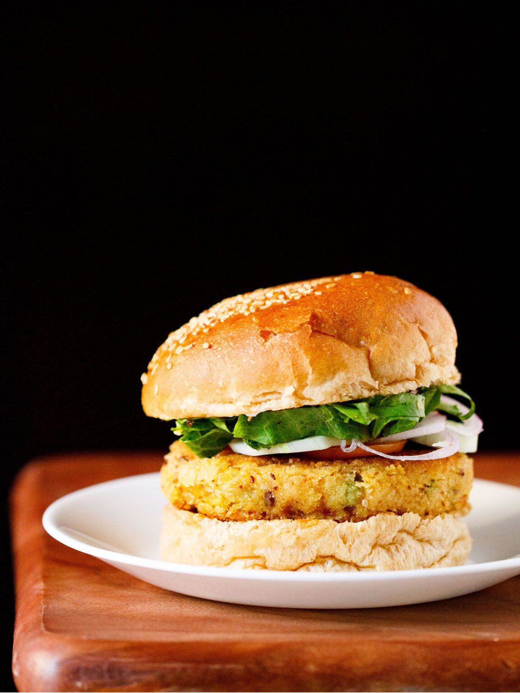
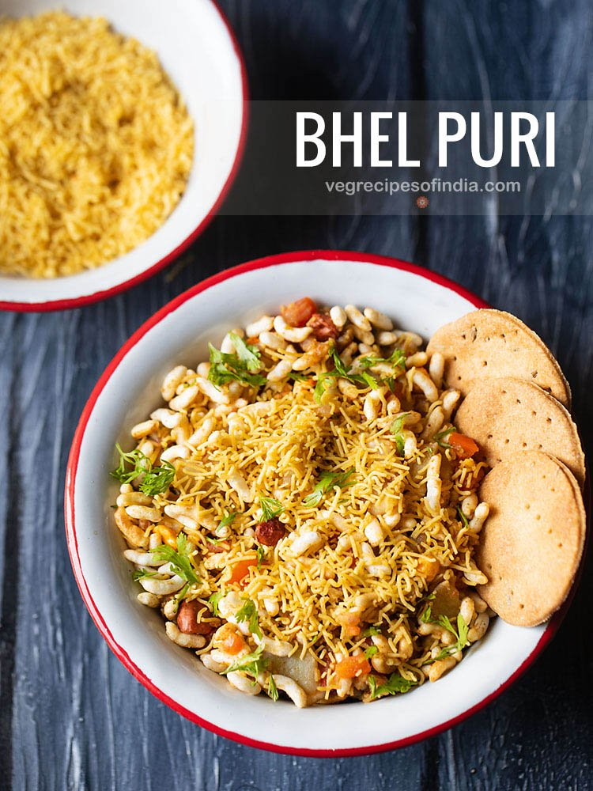

Cooking recipes
Burger

This Burger Recipe covers everything needed to make delightful veggie burgers from scratch, including how to
prepare and pan fry delicious homemade vegetable patties. And because no veggie burger is complete without
its own special sauce, I have included instruction on how to make the perfect tangy, sweet and spicy
mayonnaise dressing.
Bhel puri

Bhel Puri is a very popular Mumbai street food and very easy to make at home. It is a tasty and chatpata
snack made with puffed rice to which many delectable tidbits are added. My bhel puri recipe comes together
under 45 minutes with three real quick chutney recipes.
Gobi-65
Gobi 65 recipe with step by step photos – gobi 65 is a tasty starter snack of spicy fried cauliflower
florets. Gluten-free and a vegan snack. gobi 65 recipe, cauliflower 65, gobi 65
A yum snack for the winters is this gobi 65. the genre of 65 recipes is pretty popular in southern parts of
India. There is some prep work required to make these crisp snacks